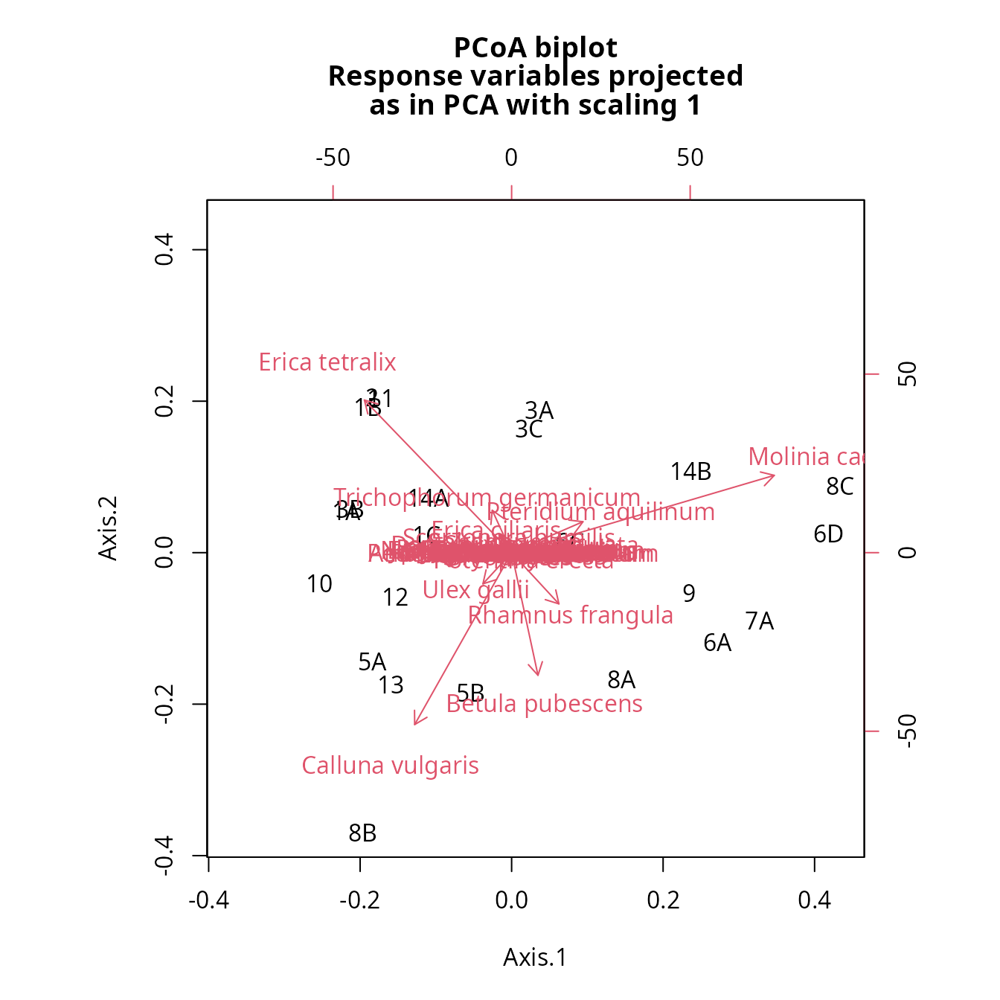
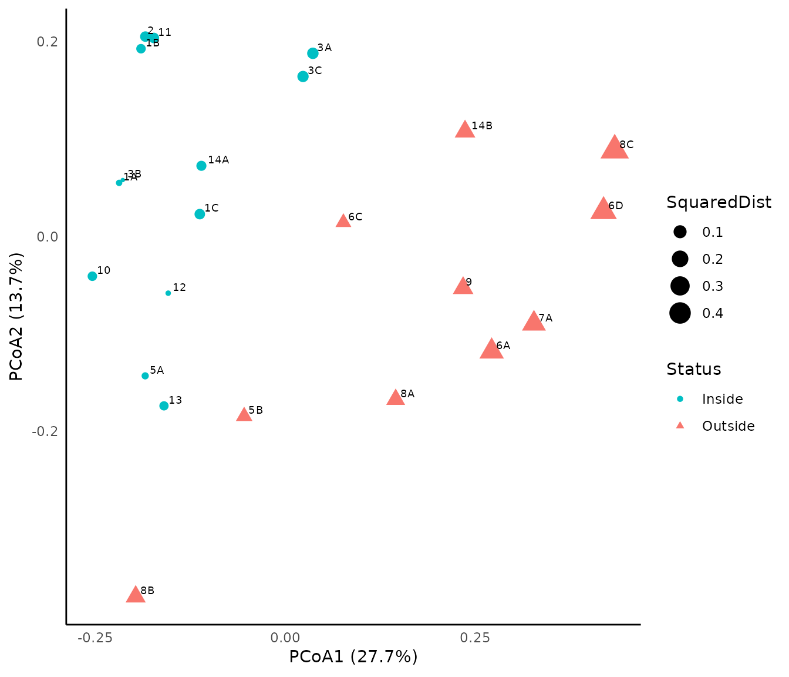
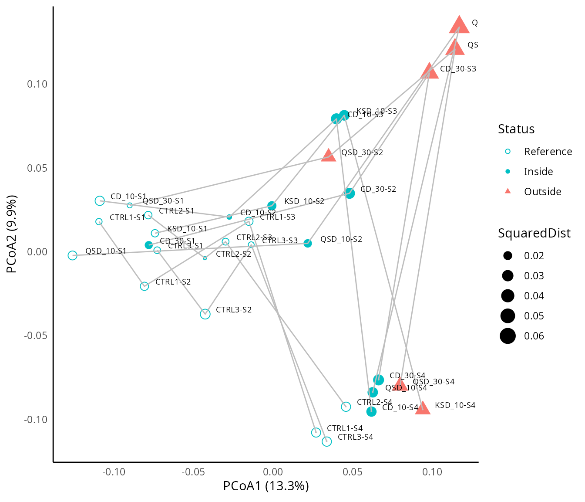
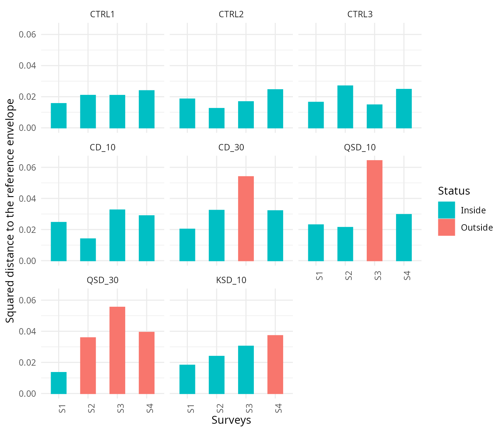
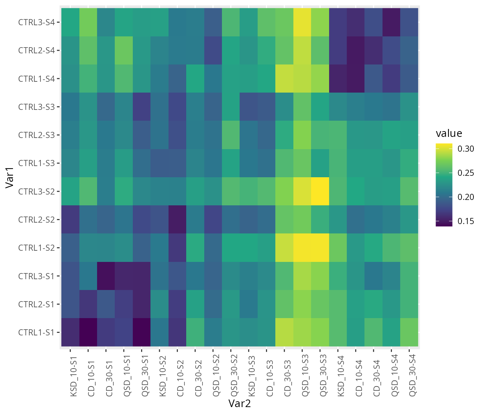
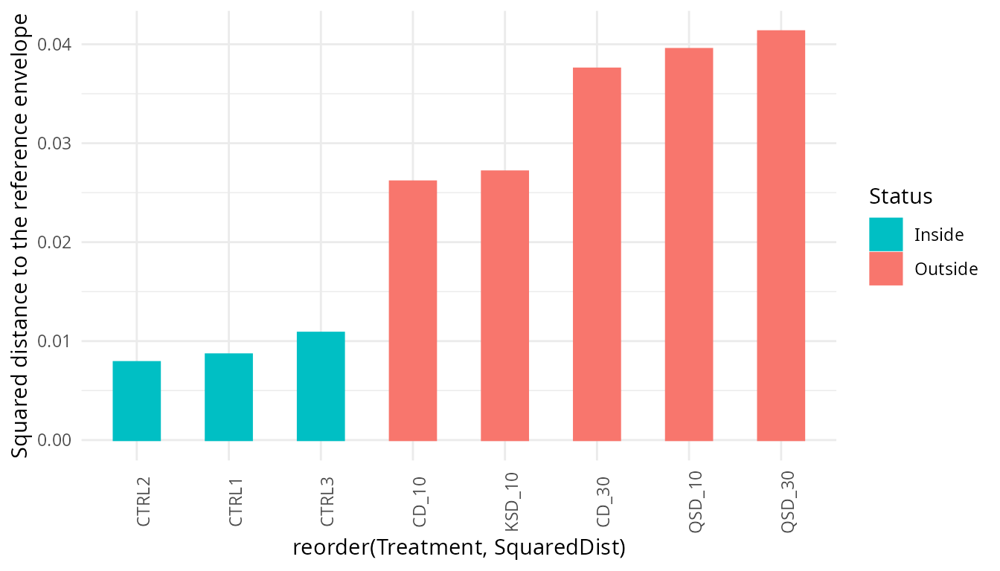

Introduction to Ecological Quality Assessment (EQA)
Anthony Sturbois/Miquel De Cáceres
2026-02-20
Source:vignettes/IntroductionEQA.Rmd
IntroductionEQA.Rmd1. About this vignette
This vignette illustrates the ecological applications included in Sturbois et al. (2023) for the presentation of the Ecological Quality Assessment (EQA) framework. The vignette illustrates how to conduct an Ecological Quality Assessment through state-based and trajectory-based variants, and how to display the results graphically. The two data sets used in this vignette have been included in the ecotraj package for reproducibility.
2. Loading libraries
First of all, we load the libraries required for the examples, including ecotraj:
## Loading required package: Rcpp## Loading required package: permute3. Heathland conservation status in Landes et Marais de Glomel
3.1 Context
The nature reserve of Landes et Marais de Glomel (Brittany, France) is composed of temperate Atlantic wet heaths whose reference state is commonly considered dominated by plant communities associated to acid, nutrient poor soils that are at least seasonally water logged and dominated by Erica tetralix and E. ciliaris. This habitat is considered of community interest as part of the European directive on the conservation of natural habitats and of wild fauna and flora (97/62/CEE). For the definition of the reference envelope, surveys integrated the variability of reference states from youngest to early senescent stages, based on expert assessment with respect to the European Directive (97/62/CEE) requirements.
3.2 Loading data
The data set consists of 23 rows (stations) and 46 columns (species). The percent cover values derived from Braun-Blanquet ordinal scale were estimated for 43 species of vascular plants. The first five stations (rows) were used to define the reference envelope, and the next 18 stations (rows) where those for which the conservation status was to be assessed.
## ID Ref Calluna vulgaris Erica ciliaris Erica tetralix Ulex gallii
## 2 1A TRUE 17.5 1 37.5 17.5
## 4 1B TRUE 5.0 0 37.5 5.0
## 6 1C TRUE 0.0 0 17.5 37.5
## 8 5A TRUE 37.5 0 17.5 5.0
## 10 13 TRUE 37.5 0 17.5 1.0
## 12 2 FALSE 5.0 0 37.5 5.0
## Molinia caerulea Betula pubescens
## 2 37.5 1.0
## 4 37.5 0.0
## 6 37.5 0.0
## 8 37.5 0.5
## 10 37.5 5.0
## 12 37.5 1.03.3 Ecological Quality Assessment
We first create a compositional data matrix, by extracting species data from the initial data table:
glomel_comp <- as.matrix(glomel[,!(names(glomel) %in% c("ID", "Ref"))])
rownames(glomel_comp) <- glomel$ID
dim(glomel_comp)## [1] 23 43Using the compositional data, we can use function
vegdist() from package vegan to calculate
of Bray Curtis distances between ecological (community) states:
glomel_bc <- vegan::vegdist(glomel_comp, method = "bray")The distance matrix glomel_bc defines the multivariate
space that represents the resemblance between ecological states.
To conduct EQA, we also need to define the conservation targets.
Column Ref in glomel identifies the stations
considered as reference. We define the state reference
envelope using reference station IDs as follows:
glomel_env <- glomel$ID[glomel$Ref]We are now ready to compare the assessed stations with respect to the
state reference envelope using function
compareToStateEnvelope():
glomel_assess <- compareToStateEnvelope(glomel_bc, glomel_env, m=1.7, distances_to_envelope = TRUE)
head(glomel_assess)## Observation Envelope SquaredDist Q
## 1 1A TRUE 0.02104178 1.0000000
## 2 1B TRUE 0.05446580 0.8639151
## 3 1C TRUE 0.07191196 0.6766241
## 4 5A TRUE 0.02678193 1.0000000
## 5 13 TRUE 0.05061912 0.9155838
## 6 2 FALSE 0.07102358 0.6845973Function compareToStateEnvelope() returns
SquaredDist, the squared distance to the envelope’s
centroid. The squared distances to the envelope averaged over the
reference points defines the variability of the envelope:
mean(glomel_assess$SquaredDist[glomel_assess$Envelope])## [1] 0.04496412This value should be equal to a call to function
stateEnvelopeVariability() :
stateEnvelopeVariability(glomel_bc, glomel_env)## [1] 0.04496412Function compareToStateEnvelope() also returns the
Q statistic, which defines the quality of the tested
stations according to their resemblance to the set of stations used as
reference. Q is comprised between 0 (lowest quality) and 1
(highest quality). We can transform Q values into a
qualitative assessment using:
And the assessment for the 18 tested stations is:
glomel_assess[!glomel_assess$Envelope,]## Observation Envelope SquaredDist Q Status
## 6 2 FALSE 0.07102358 0.68459732 Inside
## 7 3A FALSE 0.09004209 0.54102739 Inside
## 8 3B FALSE 0.01507552 1.00000000 Inside
## 9 3C FALSE 0.08679386 0.56199052 Inside
## 10 5B FALSE 0.10952585 0.43788104 Outside
## 11 6A FALSE 0.30475266 0.12202019 Outside
## 12 6C FALSE 0.09839341 0.49249490 Outside
## 13 6D FALSE 0.37376291 0.09258589 Outside
## 14 7A FALSE 0.28640532 0.13258805 Outside
## 15 8A FALSE 0.15700422 0.28705464 Outside
## 16 8B FALSE 0.18477585 0.23445116 Outside
## 17 8C FALSE 0.44104160 0.07380889 Outside
## 18 9 FALSE 0.19654729 0.21679845 Outside
## 19 10 FALSE 0.05418610 0.86752635 Inside
## 20 11 FALSE 0.07143566 0.68088087 Inside
## 21 12 FALSE 0.01703895 1.00000000 Inside
## 22 14A FALSE 0.06365289 0.75670696 Inside
## 23 14B FALSE 0.19611040 0.21741369 Outside3.4 Representing EQA results graphically
To represent the results in a graphical way, we start by conducting a Principal Coordinates Analysis (PCoA) using package ape:
pcoa_glom<-ape::pcoa(glomel_bc)We can use function biplot() from package
ape to show the ordination of stations with the species
projected as arrows:
biplot(pcoa_glom, glomel_comp)
To generate a different representation, we first get coordinates of stations in the two first dimensions of the PCoA and copy them into the assessment data frame:
PCOA_DIM1_2 <- pcoa_glom[["vectors"]][,1:2]
glomel_assess$Dim1<-PCOA_DIM1_2[,1]
glomel_assess$Dim2<-PCOA_DIM1_2[,2]
head(glomel_assess)## Observation Envelope SquaredDist Q Status Dim1 Dim2
## 1 1A TRUE 0.02104178 1.0000000 Inside -0.2185262 0.05500827
## 2 1B TRUE 0.05446580 0.8639151 Inside -0.1897143 0.19276850
## 3 1C TRUE 0.07191196 0.6766241 Inside -0.1123913 0.02290741
## 4 5A TRUE 0.02678193 1.0000000 Inside -0.1842064 -0.14315651
## 5 13 TRUE 0.05061912 0.9155838 Inside -0.1594965 -0.17397305
## 6 2 FALSE 0.07102358 0.6845973 Inside -0.1840068 0.20520893We then use package ggplot to achieve a nicer representation of the assessment. Symbol colors are used to illustrate stations that do achieve conservation objectives (in green) from those that do not achieve them (in red). The size of dots represents the squared distance to the centroid of the state reference envelope:
p<-ggplot(glomel_assess,
mapping=aes(x=Dim1,y=Dim2,size=SquaredDist, color=Status, shape=Status))+
geom_point()+
scale_colour_manual(values=c("#00BFC4", "#F8766D"))+
geom_text(glomel_assess,
mapping=aes(x=Dim1,y=Dim2,label=Observation),
hjust=-0.3, vjust=-0.3,size=2.5, color="Black")+
xlab(expression("PCoA1 (27.7%)"))+
ylab(expression("PCoA2 (13.7%)"))
p<-p + theme_minimal()+
theme(
# Hide some graphical elements
panel.border = element_blank(),
panel.grid.major = element_blank(),
panel.grid.minor = element_blank(),
axis.line = element_line(colour = "black"))
p
4. Impact of fishing activities on marine habitats
4.1 Context
We used an experimental data set built by Tauran et al. (2020) to study the impact of fishing dredges and varying fishing pressures on maerl beds, in the bay of Brest (Brittany, France). The study follows a Before-After-Control-Impact design (Stewart-Oaten et al., 1986). Briefly, three control stations were surveyed and compared to five treatment stations characterized by different fishing dredges and pressure levels (Tauran et al., 2020). Three fishing dredges are compared: (1) a clam dredge (CD), 70 to 90 kg, 1.5 m wide, 40 teeth of 11 cm each; (2) a queen scallop dredge (QSD), 120 kg,1.8 m wide, with a blade; and (3) a king scallop dredge (KSD), 190 kg, 1.8 m wide, 18 teeth of 10 cm each every 9 cm. Pressure levels were measured as the number of dredge tows performed on the zone during the experimental dredging session: 0 (i.e. control), 10, or 30 dredge tows. Samples were collected from April 2016 to April2017. Session 1 was sampled just before the experimental dredging (t0); session 2 at t0 + 1 week; session 3 at t0 + 1 month and session 4 at t0 + 12 months. Nine replicates were sampled for all treatments and sessions with a Smith-McIntyre grab (0.1m2). Abundance data were pooled at the treatment levels (i.e. CTRL1, CTRL2, CTRL3, KSD_10, CD_10, CD_30, QSD_10 and QSD_30; Appendix_D).
4.2 Loading data
The data set has 32 observations (i.e. treatments*surveys) and 250 species. We begin by loading the data:
## Abundance.Abludomelita gladiosa Abundance.Abra alba
## CD_10-S1 60 15
## CD_10-S2 54 14
## CD_10-S3 42 15
## CD_10-S4 45 8
## CD_30-S1 58 18
## CD_30-S2 39 19
## Abundance.Acanthochitona fascicularis Abundance.Achelia hispida
## CD_10-S1 2 0
## CD_10-S2 1 0
## CD_10-S3 0 0
## CD_10-S4 0 0
## CD_30-S1 4 0
## CD_30-S2 3 0
## Abundance.Alcyonidium diaphanum Abundance.Alentia gelatinosa
## CD_10-S1 0 1
## CD_10-S2 0 0
## CD_10-S3 0 0
## CD_10-S4 0 0
## CD_30-S1 0 0
## CD_30-S2 0 04.3 Definition of the ressemblance space
We separate the columns that identify the treatment and surveys.
#vector Treatment
Treatment<-glenan$Treatment
#vector Surveys
Surveys<-glenan$SurveysWe also extract the compositional data and log-transform it as initially performed in Tauran et al. (2020).
Using the compositional data, we can use function
vegdist() from package vegan to calculate
of Bray Curtis distances between ecological (community) states:
grab_bc <- vegan::vegdist(grab_comp, method = "bray")Like in the first example, the distance matrix grab_bc
defines the multivariate space that represents the resemblance between
ecological states of maerl beds.
4.4 State-based EQA
In addition to the resemblance space, to conduct the EQA we need to define the conservation targets. In this case, we define the states conforming our state reference envelope manually among the observation IDs:
#Definition of the state reference envelope
ID<-rownames(grab_comp)
grab_env <- ID[c(1,9:20,21,25,29)]We are now ready to compare the assessed stations with respect to the
state reference envelope using function
compareToStateEnvelope():
#Comparing assessed stations with respect to the state reference envelope
grab_assess <- compareToStateEnvelope(grab_bc, grab_env, m=1.5,
distances_to_envelope = TRUE)We can again check that the average of squared distances in the envelope is equal to the envelope variability:
mean(grab_assess$SquaredDist[grab_assess$Envelope])## [1] 0.0196958
stateEnvelopeVariability(grab_bc, grab_env)## [1] 0.0196958As before we derive a qualitative assessment from Q
values:
grab_assess$Status<-c(ifelse(grab_assess$Q>=0.5,"Inside", "Outside"))
grab_assess$Status[c(1,9:20,21,25,29)]<-"Reference"
grab_assess$Status<- factor(grab_assess$Status, levels = c("Reference","Inside","Outside"))
head(grab_assess)## Observation Envelope SquaredDist Q Status
## 1 CD_10-S1 TRUE 0.02454948 0.7832098 Reference
## 2 CD_10-S2 FALSE 0.01397410 1.0000000 Inside
## 3 CD_10-S3 FALSE 0.03255742 0.5358405 Inside
## 4 CD_10-S4 FALSE 0.02883204 0.6363532 Inside
## 5 CD_30-S1 FALSE 0.02021846 0.9738153 Inside
## 6 CD_30-S2 FALSE 0.03232080 0.5415827 InsideWe then represent the results of the state-based EQA on in the two first dimensions of a Principal Coordinates Analysis:
#Get coordinates of stations in the two first dimensions of the PCoA
pcoa<-ape::pcoa(grab_bc)
PCOA_DIM1_2<-pcoa[["vectors"]][,1:2]
grab_assess$Dim1<-PCOA_DIM1_2[,1]
grab_assess$Dim2<-PCOA_DIM1_2[,2]
#Information about Treatment and Surveys
grab_assess$Treatment<-Treatment
grab_assess$Surveys<-Surveys
p<-ggplot(grab_assess, aes(x=Dim1, y=Dim2, group=Status)) +
geom_point(aes(shape=Status, color=Status, size=SquaredDist))+
scale_shape_manual(values=c(1, 16, 17))+
scale_color_manual(values=c("#00BFC4", "#00BFC4", "#F8766D"))+
geom_path(aes(x=Dim1,y=Dim2,group=Treatment),color="grey", arrow = arrow(length = unit(0.03, "cm")))+
geom_text(grab_assess,mapping=aes(x=Dim1,y=Dim2,label=ID),hjust=-0.3, vjust=-0.3,size=2.5, color="Black")+
xlab(expression("PCoA1 (13.3%)"))+
ylab(expression("PCoA2 (9.9%)"))
p<-p+ theme_minimal()+
theme(
# Hide some graphical elements
panel.border = element_blank(),
panel.grid.major = element_blank(),
panel.grid.minor = element_blank(),
axis.line = element_line(colour = "black"))
p
Since we are dealing with temporal data, we can create a bar plot showing the evolution of the squared distance to the centroid of the state reference envelope during the study period for each treatment:
grab_assess$Treatment<-factor(grab_assess$Treatment,c("CTRL1","CTRL2","CTRL3",
"CD_10","CD_30",
"QSD_10","QSD_30",
"KSD_10"))
grab_assess$Status<-c(ifelse(grab_assess$Q>=0.5,"Inside", "Outside"))
grab_assess$Status<- factor(grab_assess$Status, levels = c("Inside","Outside"))
ggplot(grab_assess, aes(x=Surveys, y=SquaredDist, color=Status, fill=Status)) +
geom_bar(stat = "identity",width=0.5)+
scale_colour_manual(values=c("#00BFC4", "#F8766D"))+
scale_fill_manual(values=c("#00BFC4", "#F8766D"))+
scale_y_continuous("Squared distance to the reference envelope")+
theme_minimal()+
facet_wrap(~Treatment)+
theme(axis.text.x = element_text(angle=90))
In addition, we can create the heatmap showing the evolution of the distance between control and dredged stations during the experimentation:
grabbc_sel <- melt(as.matrix(grab_bc),rnames = c("row", "col"))
#selection of the observation of interest (i.e. control stations for heat map row, and dredged stations for heat map column)
grabbc_sel<-grabbc_sel[!grabbc_sel$Var2 %in% c("CTRL1-S1","CTRL2-S1","CTRL3-S1","CTRL4-S1",
"CTRL1-S2","CTRL2-S2","CTRL3-S2","CTRL4-S2",
"CTRL1-S3","CTRL2-S3","CTRL3-S3","CTRL4-S3",
"CTRL1-S4","CTRL2-S4","CTRL3-S4","CTRL4-S4"),]
grabbc_sel<-grabbc_sel[grabbc_sel$Var1 %in% c("CTRL1-S1","CTRL2-S1","CTRL3-S1","CTRL4-S1",
"CTRL1-S2","CTRL2-S2","CTRL3-S2","CTRL4-S2",
"CTRL1-S3","CTRL2-S3","CTRL3-S3","CTRL4-S3",
"CTRL1-S4","CTRL2-S4","CTRL3-S4","CTRL4-S4"),]
grabbc_sel$Var1<-factor(grabbc_sel$Var1,
c("CTRL1-S1","CTRL2-S1","CTRL3-S1","CTRL4-S1",
"CTRL1-S2","CTRL2-S2","CTRL3-S2","CTRL4-S2",
"CTRL1-S3","CTRL2-S3","CTRL3-S3","CTRL4-S3",
"CTRL1-S4","CTRL2-S4","CTRL3-S4","CTRL4-S4"))
grabbc_sel$Var2<-factor(grabbc_sel$Var2,
c("KSD_10-S1","CD_10-S1","CD_30-S1","QSD_10-S1","QSD_30-S1",
"KSD_10-S2","CD_10-S2","CD_30-S2","QSD_10-S2","QSD_30-S2",
"KSD_10-S3","CD_10-S3","CD_30-S3","QSD_10-S3","QSD_30-S3",
"KSD_10-S4","CD_10-S4","CD_30-S4","QSD_10-S4","QSD_30-S4"))
ggplot(grabbc_sel, aes(x=Var2, y=Var1, fill=value)) +
geom_raster() +
scale_fill_viridis_c()+
theme(axis.text.x=element_text(angle = 90, hjust = 0))
4.5 Trajectory-based EQA
One of the nice features of EQA is the possibility to conduct the quality assessment taking into account ecosystem dynamics. In this case, the conservation target is defined by a set of trajectories conforming a trajectory reference envelope, which in our case are the three control stations:
#Definition of the trajectory reference envelope
grab_dynenv<-c("CTRL1","CTRL2","CTRL3")We are now ready to compare the assessed trajectories (those subject
to treatment) with respect to the trajectory reference envelope using
function compareToTrajectoryEnvelope():
##Comparing assessed trajectories with respect to the trajectory reference envelope
grab_dynassess <- compareToTrajectoryEnvelope(grab_bc,Treatment, grab_dynenv,
m=1.5, distances_to_envelope = TRUE)We can also check that the average of squared distances in the envelope is equal to the envelope variability:
mean(grab_dynassess$SquaredDist[grab_dynassess$Envelope])## [1] 0.009123776
trajectoryEnvelopeVariability(grab_bc, sites = Treatment, envelope = grab_dynenv)## [1] 0.009123776As before, we can create a bar plot showing the squared distance to the centroid of the trajectory reference envelope during the study period for each treatment:
grab_dynassess$Treatment<-factor(grab_dynassess$Site,c("CTRL1","CTRL2","CTRL3",
"CD_10","CD_30",
"QSD_10","QSD_30",
"KSD_10"))
grab_dynassess$Status<-c(ifelse(grab_dynassess$Q>=0.5,"Inside", "Outside"))
grab_dynassess$Status<- factor(grab_dynassess$Status, levels = c("Inside","Outside"))
ggplot(grab_dynassess, aes(x=reorder(Treatment, SquaredDist),
y=SquaredDist, color=Status, fill=Status)) +
geom_bar(stat = "identity",width=0.5)+
scale_colour_manual(values=c("#00BFC4", "#F8766D"))+
scale_fill_manual(values=c("#00BFC4", "#F8766D"))+
scale_y_continuous("Squared distance to the reference envelope")+
theme_minimal()+
theme(axis.text.x = element_text(angle=90))
5. References
Sturbois, A., De Cáceres, M., Bifolchi, A., Bioret, F., Boyé, A., Gauthier, O., Grall, J., Grémare, A., Labrune, C., Robert, A., Schaal, G., Desroy, N. (2023). Ecological Quality Assessment: a general multivariate framework to report the quality of ecosystems and their dynamics with respect to reference conditions. Ecosphere 14, e4726. https://doi.org/10.1002/ecs2.4726
Tauran, A., Dubreuil, J., Guyonnet, B., Grall, J., 2020. Impact of fishing gears and fishing intensities on maerl beds: An experimental approach. Journal of Experimental Marine Biology and Ecology 533, 151472. https://doi.org/10.1016/j.jembe.2020.151472